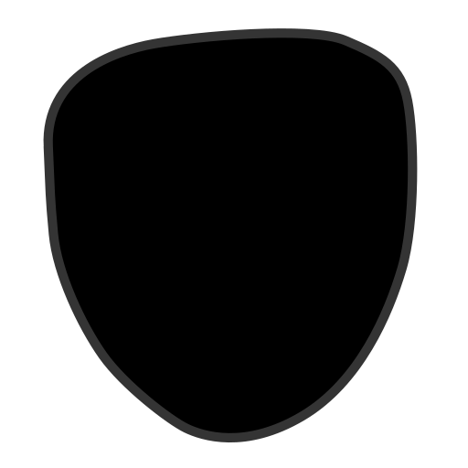

Jack Arthur Harrhy
StudentDepartment of Computer Science
E-mail Address: jaharrhy@mun.ca
minecraft is for 10 year olds
- Kyle Olmstead, 2018

❈🎀 𝓁𝑒𝓉𝓈 𝓅𝓁𝒶𝓎 𝓇𝓊𝓃𝑒𝓈𝒸𝒶𝓅𝑒 𝓌/𝓉𝒾𝓂💞𝓉𝒽𝓎 😍𝓇𝒶𝓂 🎀❈
- Myself, 2019
wanna save my environment
- Nathan MacNeil, Bluedrop Performance Learning Slack, 2019
What are you talking about @Nathan, no one @Nathaned you. Why would someone @Nathan you, that would be rather rude. Oh! I see @Nathan , you think that Stephen was talking about you, @Nathan, not everything is about you @Nathan.
- Timothy Oram, CTSNL Slack, 2019
Teledildonics
-redacted, Compsci Bois Discord, 2019
do not look for the sequence
it is closely guarded
- Joshua Murphy, security man at Sequence Bio, CTSNL Slack, 2019
Haha that moment when ur 40
40 be like
i love italics
- Katie Hardy, DMs, 2019
Honestly if cache is so fast why don't we just make solid state drives out of cache
- Nathan MacNeil, snap, 2019
knowledge!
Projects
- meowj - pancake-ify json
- docker-pastebin - curl to the world
- DUaaS - /dev/urandom as a service
- metrobus-spy - where the bus at tho
- barab - verilog is trivial
- guesbok - guesbok
- bullet - a small vanilla html5 canvas object-avoiding game
check out my photos!
or how about some videos!
Esteemed Colleagues
- Tim Oram - ~oram
- Steve Parson - ~k47swp
- Riley Flynn - ~raflynn
- Josh Murphy - ~jmurphy17
- Gavin Power - ~gjpower
- Andrew Stacey - ~agstacey
- Nathan MacNeil - ~nrm540
- Katie Hardy - ~knhardy
despacito

Collarbone Softtissue
enter

Hosted on the following beast: